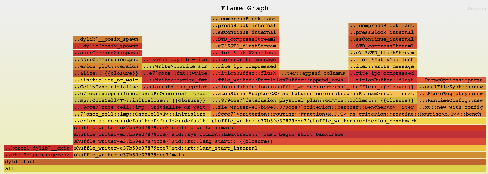

Profiling#
This guide covers profiling tools and techniques for Comet development. Because Comet spans JVM (Spark) and native (Rust) code, choosing the right profiler depends on what you are investigating.
Choosing a Profiling Tool#
Tool |
JVM Frames |
Native (Rust) Frames |
Install Required |
Best For |
|---|---|---|---|---|
Yes |
Yes |
Yes |
End-to-end Comet profiling with unified JVM + native flame graphs |
|
Yes |
No |
No (JDK 11+) |
GC pressure, allocations, thread contention, I/O — any JVM-level investigation |
|
No |
Yes |
Yes |
Isolated Rust micro-benchmarks without a JVM |
Recommendation: Use async-profiler when profiling Spark queries with Comet enabled —
it is the only tool that shows both JVM and native frames in a single flame graph.
Use JFR when you need rich JVM event data (GC, locks, I/O) without installing anything.
Use cargo-flamegraph when working on native code in isolation via cargo bench.
Profiling with async-profiler#
async-profiler captures JVM and
native code in the same flame graph by using Linux perf_events or macOS dtrace.
This makes it ideal for profiling Comet, where hot paths cross the JNI boundary between
Spark and Rust.
Installation#
Download a release from the async-profiler releases page:
# Linux x64
wget https://github.com/async-profiler/async-profiler/releases/download/v3.0/async-profiler-3.0-linux-x64.tar.gz
mkdir -p $HOME/opt/async-profiler
tar xzf async-profiler-3.0-linux-x64.tar.gz -C $HOME/opt/async-profiler --strip-components=1
export ASYNC_PROFILER_HOME=$HOME/opt/async-profiler
On macOS, download the appropriate macos archive instead.
Attaching to a running Spark application#
Use the asprof launcher to attach to a running JVM by PID:
# Start CPU profiling for 30 seconds, output an HTML flame graph
$ASYNC_PROFILER_HOME/bin/asprof -d 30 -f flamegraph.html <pid>
# Wall-clock profiling
$ASYNC_PROFILER_HOME/bin/asprof -e wall -d 30 -f flamegraph.html <pid>
# Start profiling (no duration limit), then stop later
$ASYNC_PROFILER_HOME/bin/asprof start -e cpu <pid>
# ... run your query ...
$ASYNC_PROFILER_HOME/bin/asprof stop -f flamegraph.html <pid>
Find the Spark driver/executor PID with jps or pgrep -f SparkSubmit.
Passing profiler flags via spark-submit#
You can also attach async-profiler as a Java agent at JVM startup:
spark-submit \
--conf "spark.driver.extraJavaOptions=-agentpath:$ASYNC_PROFILER_HOME/lib/libasyncProfiler.so=start,event=cpu,file=driver.html,tree" \
--conf "spark.executor.extraJavaOptions=-agentpath:$ASYNC_PROFILER_HOME/lib/libasyncProfiler.so=start,event=cpu,file=executor.html,tree" \
...
Note: If the executor is distributed then executor.html will be written on the remote node.
Choosing an event type#
Event |
When to use |
|---|---|
|
Default. Shows where CPU cycles are spent. Use for compute-bound queries. |
|
Wall-clock time including blocked/waiting threads. Use to find JNI boundary overhead and I/O stalls. |
|
Heap allocation profiling. Use to find JVM allocation hotspots around Arrow FFI and columnar conversions. |
|
Lock contention. Use when threads appear to spend time waiting on synchronized blocks or locks. |
Output formats#
Format |
Flag |
Description |
|---|---|---|
HTML flame graph |
|
Interactive flame graph (default and most useful). |
JFR |
|
Viewable in JDK Mission Control or IntelliJ. |
Collapsed stacks |
|
For use with Brendan Gregg’s FlameGraph scripts. |
Text summary |
|
Flat list of hot methods. |
Platform notes#
Linux: Set perf_event_paranoid to allow profiling:
sudo sysctl kernel.perf_event_paranoid=1 # or 0 / -1 for full access
sudo sysctl kernel.kptr_restrict=0 # optional: enable kernel symbols
macOS: async-profiler uses dtrace on macOS, which requires running as root or
with SIP (System Integrity Protection) adjustments. Native Rust frames may not be fully
resolved on macOS; Linux is recommended for the most complete flame graphs.
Integrated benchmark profiling#
The TPC benchmark scripts in benchmarks/tpc/ have built-in async-profiler support via
the --async-profiler flag. See benchmarks/tpc/README.md
for details.
Profiling with Java Flight Recorder#
Java Flight Recorder (JFR) is built into JDK 11+ and collects detailed JVM runtime data with very low overhead. It does not see native Rust frames, but is excellent for diagnosing GC pressure, thread contention, I/O latency, and JVM-level allocation patterns.
Adding JFR flags to spark-submit#
spark-submit \
--conf "spark.driver.extraJavaOptions=-XX:StartFlightRecording=duration=120s,filename=driver.jfr" \
--conf "spark.executor.extraJavaOptions=-XX:StartFlightRecording=duration=120s,filename=executor.jfr" \
...
For continuous recording without a fixed duration:
--conf "spark.driver.extraJavaOptions=-XX:StartFlightRecording=disk=true,maxsize=500m,filename=driver.jfr"
You can also start and stop recording dynamically using jcmd:
jcmd <pid> JFR.start name=profile
# ... run your query ...
jcmd <pid> JFR.stop name=profile filename=recording.jfr
Viewing recordings#
JDK Mission Control (JMC) — the most comprehensive viewer. Shows flame graphs, GC timeline, thread activity, I/O, and allocation hot spots.
IntelliJ IDEA — open
.jfrfiles directly in the built-in profiler (Run → Open Profiler Snapshot).jfrCLI — quick summaries from the command line:jfr summary driver.jfr
Useful JFR events for Comet debugging#
Event |
What it shows |
|---|---|
|
GC pause durations — helps identify memory pressure from Arrow allocations. |
|
Allocation hot spots. |
|
Thread contention and lock waits. |
|
I/O latency. |
|
CPU sampling (method profiling, similar to a flame graph). |
Integrated benchmark profiling#
The TPC benchmark scripts support --jfr for automatic JFR recording during benchmark
runs. See benchmarks/tpc/README.md for details.
Profiling Native Code with cargo-flamegraph#
For profiling Rust code in isolation — without a JVM — use cargo bench with
cargo-flamegraph.
Running micro benchmarks with cargo bench#
When implementing a new operator or expression, it is good practice to add a new microbenchmark under core/benches.
It is often easiest to copy an existing benchmark and modify it for the new operator or expression. It is also
necessary to add a new section to the Cargo.toml file, such as:
[[bench]]
name = "shuffle_writer"
harness = false
These benchmarks are useful for comparing performance between releases or between feature branches and the main branch to help prevent regressions in performance when adding new features or fixing bugs.
Individual benchmarks can be run by name with the following command.
cargo bench shuffle_writer
Here is some sample output from running this command.
Running benches/shuffle_writer.rs (target/release/deps/shuffle_writer-e37b59e37879cce7)
Gnuplot not found, using plotters backend
shuffle_writer/shuffle_writer
time: [2.0880 ms 2.0989 ms 2.1118 ms]
Found 9 outliers among 100 measurements (9.00%)
3 (3.00%) high mild
6 (6.00%) high severe
Profiling with cargo-flamegraph#
Install cargo-flamegraph:
cargo install flamegraph
Follow the instructions in cargo-flamegraph for your platform for running flamegraph.
Here is a sample command for running cargo-flamegraph on MacOS.
cargo flamegraph --root --bench shuffle_writer
This will produce output similar to the following.
dtrace: system integrity protection is on, some features will not be available
dtrace: description 'profile-997 ' matched 1 probe
Gnuplot not found, using plotters backend
Testing shuffle_writer/shuffle_writer
Success
dtrace: pid 66402 has exited
writing flamegraph to "flamegraph.svg"
The generated flamegraph can now be opened in a browser that supports svg format.
Here is the flamegraph for this example:

Tips for Profiling Comet#
Use wall-clock profiling to spot JNI boundary overhead#
When profiling Comet with async-profiler, wall mode is often more revealing than cpu
because it captures time spent crossing the JNI boundary, waiting for native results,
and blocked on I/O — none of which show up in CPU-only profiles.
$ASYNC_PROFILER_HOME/bin/asprof -e wall -d 60 -f wall-profile.html <pid>
Use alloc profiling around Arrow FFI#
JVM allocation profiling can identify hotspots in the Arrow FFI path where temporary objects are created during data transfer between JVM and native code:
$ASYNC_PROFILER_HOME/bin/asprof -e alloc -d 60 -f alloc-profile.html <pid>
Look for allocations in CometExecIterator, CometBatchIterator, and Arrow vector
classes.
Isolate Rust-only performance issues#
If a flame graph shows the hot path is entirely within native code, switch to
cargo-flamegraph to get better symbol resolution and avoid JVM noise:
cd native
cargo flamegraph --root --bench <benchmark_name>
Correlating JVM and native frames#
In async-profiler flame graphs, native Rust frames appear below JNI entry points like
Java_org_apache_comet_Native_*. Look for these transition points to understand how
time is split between Spark’s JVM code and Comet’s native execution.